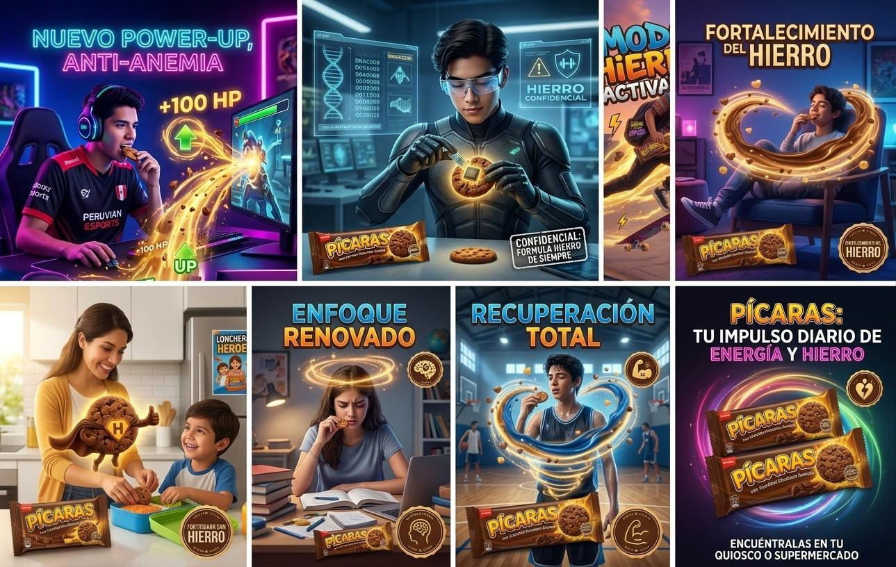

IronBites: galletas con hierro y el sabor de siempre
La nueva línea de Pícaras fortificada con hierro: la misma galleta crocante bañada en chocolate, con chispas de cacao de la selva peruana y unos 7 mg de hierro por porción.
«El sabor divertido de siempre, con la fuerza del hierro para ti.»

Propuesta de valor
«Disfruta el sabor y la picardía de Pícaras, ahora con aporte de hierro, en una alternativa práctica que combina nutrición y sabor sin dejar de disfrutar.»
Puntos de diferencia
- Hierro dentro de una galleta de consumo diario.
- Indulgencia y nutrición en un mismo snack.
- Respaldo de una marca que el público ya conoce.
- Personalidad divertida aplicada a un tema serio.
Diagnóstico y estrategia
Cinco fuerzas con intermediarios de poder alto y rivalidad alta; FODA cruzado con estrategia DO – Innovación y diversificación de la categoría.
Objetivos a diciembre de 2026
- Negocio: +10 % de ventas de galletas fortificadas.
- Comportamiento: 15 % con intención de probar.
- Imagen: 25 % asocia la categoría con nutrición y sabor.
Buyer persona: Jorge
Universitario que come snacks entre clases, estudiando o fuera de casa. Quiere rendir todo el día sin complicar su rutina.
«Tu nuevo Power-Up contra la anemia»
El día de un joven es como un videojuego: clases, trabajo, entrenamientos y redes. La anemia es el «Game Over». IronBites es la vida extra que te deja seguir en la partida.
Guion del spot de TV (30 s)
- 0–7 s · Game over«¡Tengo mil retos por delante y necesito seguir avanzando!»
- 7–15 s · Power-up«¡IronBites, galletas con hierro para acompañarte en tus retos diarios!»
- 15–23 s · Level up«¡Nuevo nivel desbloqueado! El sabor de siempre, ahora con vida extra.»
- 23–30 s · Cierre«¡IronBites, tu nuevo Power-Up contra la anemia!» Texto: Activa tu modo hierro.
La campaña en todos los medios
Una sola idea, el power-up, adaptada a cada formato. Eso es lo que hace integrado al plan.
Medios masivos
- Spot de TV y cuña radial de 30 s.
- Aviso en revista especializada con barra de vida.
- Pantalla LED en la Vía Expresa y lightbox en el Metropolitano.
- Panel frente a universidades y máquinas expendedoras estilo arcade.
Relaciones públicas
- Press kit «El sabor peruano que combate la anemia».
- Programa social «Mordidas que Suman».
- Cápsulas «Mitos vs. Verdades del Antojo» con micro-influencers.
- «Cabina de Recarga IronBites» en universidades.
Trade y promociones
- Exhibidor «Isla Power-Up» en quioscos universitarios.
- Push: 6 paquetes gratis por cada 2 displays.
- Pull: 2x1.5 con cupón QR en Tambo y Oxxo.
- Pack post-entreno x3 a S/ 5.00 en gimnasios.
Digital
- Web de marca con inicio, producto, blog y FAQ.
- SEO y SEM para búsquedas sobre anemia y snacks.
- Contenido y anuncios en TikTok e Instagram.
